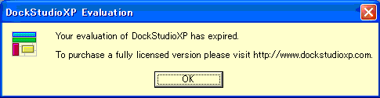

[トップ] [変更履歴]
[目次] [用語] | [AdmCli]
[ADMSV] [RSV]
| [VCE-Log] [VCEモニター]
開発者情報
レイアウトファイルについて
レジストリについて
デバッグ時のエラーについて
DocStudio評価版の期限切れについて(バグ情報)
チャットに入室しようとすると、以下のようなダイアログが出ました。

その後、エラーになり止ります。DockStudioのインストールと関係があるようです。
admcliの目次に戻る
Copyright 2000-2005 CommunityEngine Inc. All rights reserved.